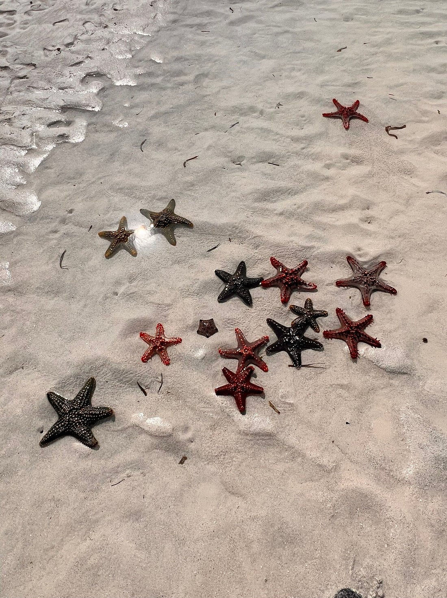
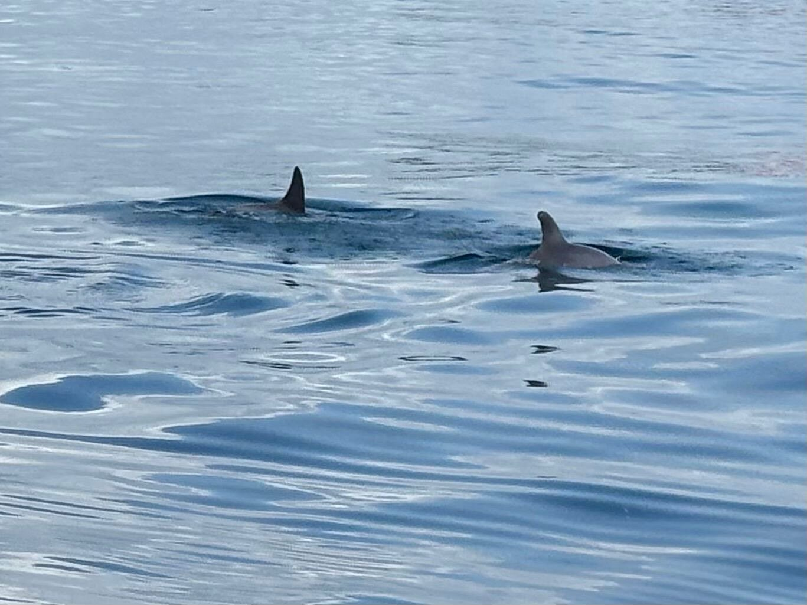
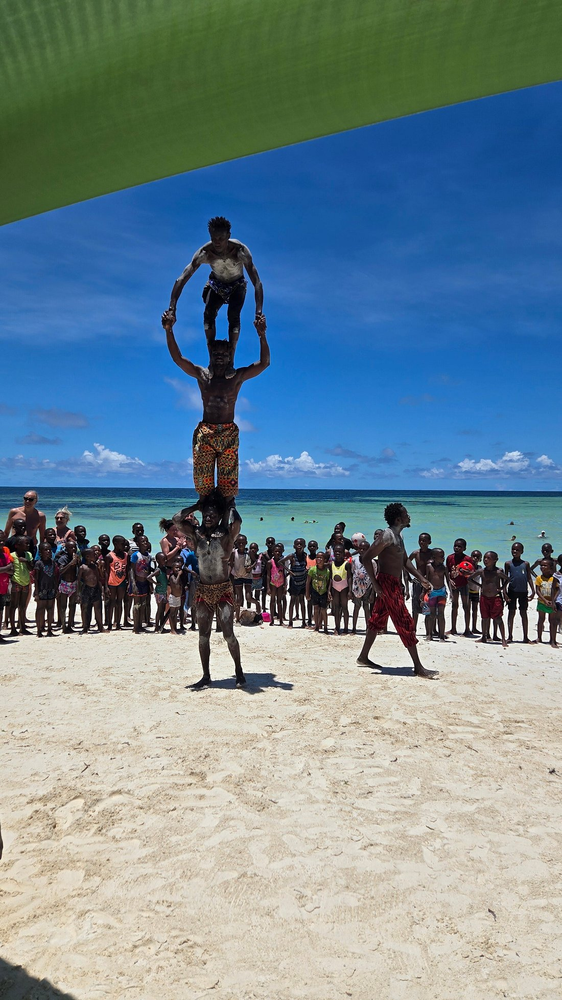
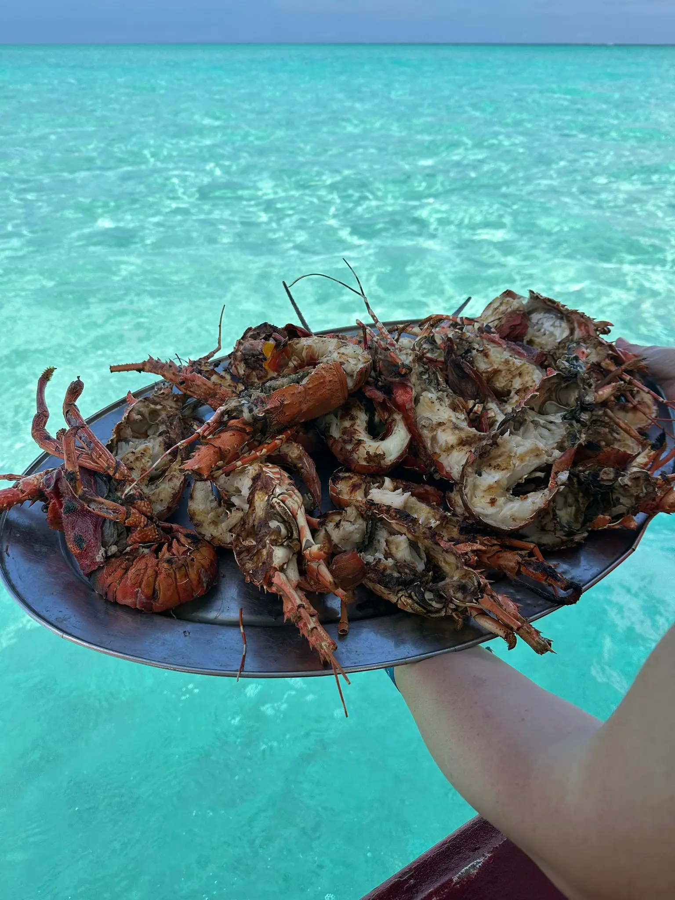

Escursione tra mare cristallino e spiagge paradisiache




Partenza verso le ore 08:00 dal vostro alloggio per raggiungere la barca con fondo di vetro, attrezzata con tettuccio sopraelevato dove sarà possibile rilassarsi e prendere il sole durante la navigazione.
🐠 Prima fermata: il Parco Marino di Watamu, una riserva naturale protetta dove potrete fare snorkeling alla scoperta dei coloratissimi pesci tropicali che popolano la barriera corallina. Maschere, pinne e salvagenti possono essere forniti dal nostro staff.
🐬 Possibilità di avvistare i delfini da novembre a marzo, se la stagione lo consentirà.
🏝️ Proseguimento verso Sardegna 2 (Spiaggia di Jacaranda), uno spettacolare atollo visibile solamente durante la bassa marea.
Qui potrete ammirare acque cristalline dalle mille sfumature, passeggiare sulla sabbia bianca, rilassarvi al sole e cercare stelle marine mentre attendete il pranzo servito direttamente in barca.
🍽️ Pranzo a base di riso al cocco, sugo di polpo, aragosta, pesce fresco, gamberi alla griglia, frutta tropicale e bevande analcoliche.
Dopo pranzo ci sarà del tempo libero per rilassarsi prima del rientro verso il vostro alloggio nel tardo pomeriggio.